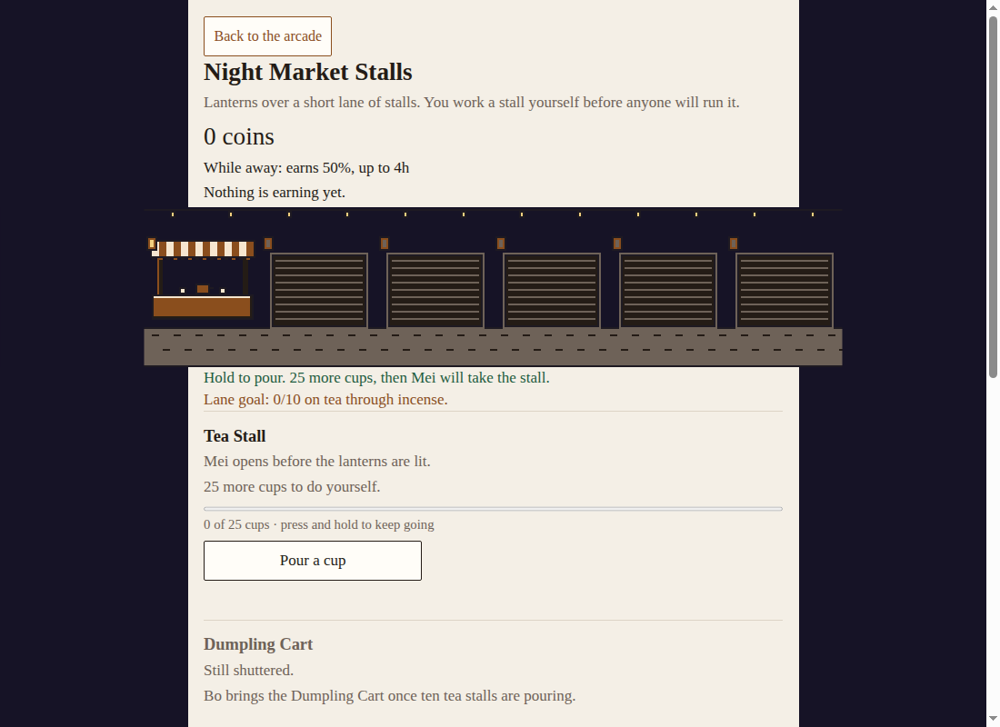

Where to open it
There is no card for it yet. Open Night Market Stalls from this guide, or from the no-JavaScript list on the homepage. Back to the arcade is in the header. On a phone that is the one Back link, so Download my save and Load a save file stay on the page.
The scene line under the title is the rule of the lane: you work a stall yourself before anyone will run it. The header also shows your coins, the away rule, and what the lane earns each second.

The six stalls
They open in order. The next stall appears when you have enough of the one before it. Ten is the usual number. The Incense Tray waits for twelve Mooncake Tables.
| Stall | Who runs it | What you do first |
|---|---|---|
| Tea Stall | Mei | Pour a cup. She opens before the lanterns are lit. |
| Dumpling Cart | Bo | Fold a dumpling. He talks while he folds. |
| Lantern Stand | An | Light a lantern. She trims each wick until the flame sits still. |
| Mooncake Table | Qiao | Wrap a mooncake. She counts the tins twice. |
| Incense Tray | Ren | Light a stick. One for the stall and one for the alley. |
| Story Mat | Old Wen | Tell a piece of the story. He stops just before the ending. |
Hold the work button and it keeps going, about eight a second, and never faster. A cups bar, or the matching bar for that stall, shows how close you are to asking the vendor. The work button stays after you hire, so you can still pour, fold or light a wick yourself. The Ask button keeps its place before it can be pressed, so the work button does not jump when “Ask Mei” or “Ask Bo” appears.
After a vendor is running the stall, you buy more of it. The buying row offers 1, 10, Max and Next. Max stops at the next doubling, and also when that buy would take longer than seven and a half minutes to pay for itself. When you can afford a copy and Max still refuses it, the button says “Long payback: use 1, 10 or Next.” When Next cannot afford the whole jump, it quotes the copies you can afford. A lower payback time is a better buy. The first time a payback appears, one line says so. Best is a small tag on the stall that pays for itself soonest. If the best stall is still out of reach, the row keeps the Best tag and adds “save up”.
What changes as the lane grows
A picture of the lane sits under the header, stalls in order. An open stall shows a striped awning, a counter and its own wares. A shuttered stall stays dark. Each sale pops a coin up from that stall. Lanterns flicker along the top. Tea, dumplings and mooncakes steam, and the incense smokes, once that stall is open and has been served or hired. People stroll once a stall is staffed. With reduced motion, the lane holds still.
At 25, 50 and 100 a stall changes look, and it earns twice as much at each of those counts, and again at 150, 200, 300 and 400. The whole lane changes when your lowest stall among the first five reaches 10, then 25, then 50. The Story Mat is not part of that lowest count, so opening it does not put the lane back to the start. Every stall shows the next of those goals. The green line keeps the next target, including “The whole lane is lit.” Past 50, when the green line is talking about something else, the lane counter names the next doubling: 100, then 150, and so on.
Old Wen’s last chapter
Each Story Mat is one chapter of a tortoise carrying a lantern up a hill. The lines are the game’s own tale. The tenth chapter is “Old Wen’s last chapter”: the tortoise sets the lantern on the hill, and the lanterns over the lane go out, one by one. Buying that tenth mat brings the lane into view, then the ending card. The button says “Keep the lane open.” From the eleventh mat on, the row says “Old Wen tells it again.” Nothing new arrives after the finale. You can keep buying and leave the lane open.
Leaving the page
While this page is open, income uses the full rate, including a hidden tab. Close it and come back, and the stalls earn 50%, and only four hours count. The cash box says so. The welcome is titled “While you were away.” If the box only held four hours, it says which part counted. A hired vendor has a line about the time you were gone. The lane was quiet if nobody had been hired.
Load a save file that belongs to another game and the box refuses it straight away. It says that file is not a save for this game, and it does not ask to replace yours. A real Night Market save still asks first. The save summary and Automatic backups open with a disclosure arrow.
Still being built
Two things are planned and are not in the lane you can open today.
A card on the arcade. Night Market is meant to open from the hall. That card is still being built. Until it lands, the picture row and the Lab do not list the stalls. This guide’s play link is the way in.
A second way to spend the night. The work queue describes it, and it is still in review, not in this build: visitors you can meet, lines from Old Wen that react to that night, tales from the vendors, more omens and charms, and an ending on the tenth night. None of those are on the lane. Extra district notes and tale files sit beside the game and are not loaded. They are not stalls you can buy.